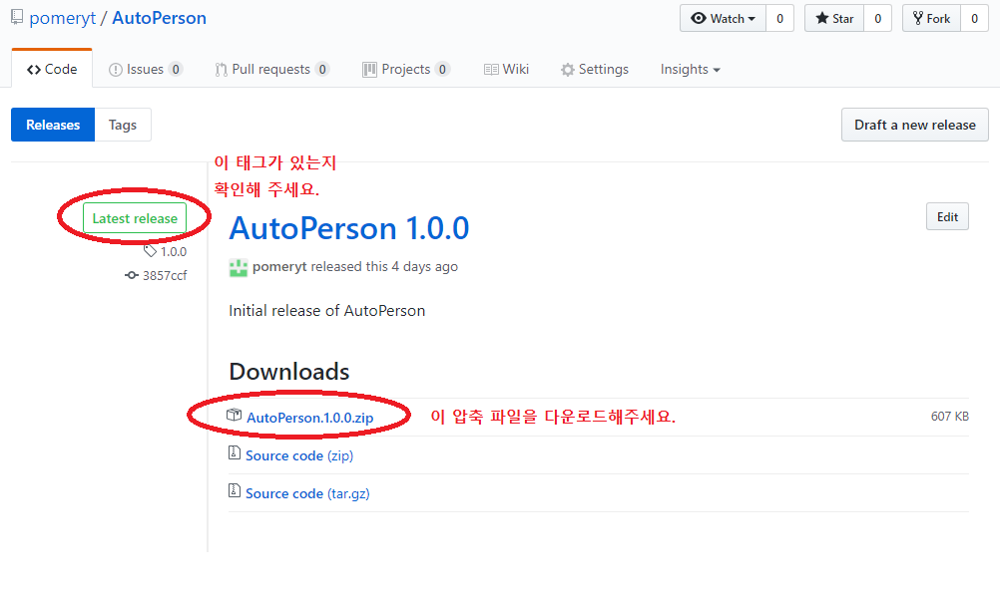

이 프로그램은 자바가 필요합니다.
혹시 자바가 없으신 분은 자바 1.8.0버전 이상을
여기서 다운받아 주세요.
Step 1: Latest release 태그가 붙은 압축파일을 다운로드해 주세요.
여기를 클릭해 주세요.
가장 최신 버전을 다운로드하셔야 합니다.

Step 2: 다운로드하신 파일의 압축을 풀어주세요.
Step 3: AutoPerson.exe를 실행했을 때 프로그램이 제대로 작동하는지 확인해 주세요.
실행파일을 실행시키면
script와
setting 폴더가 생성됩니다.